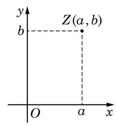
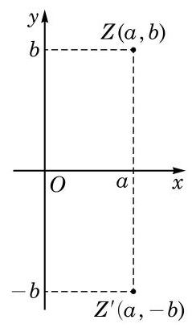
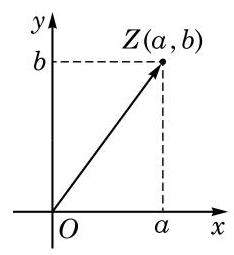
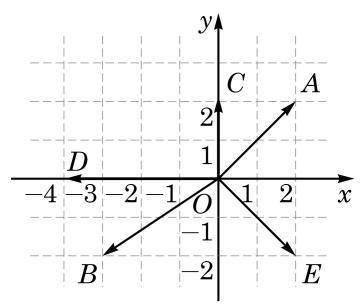
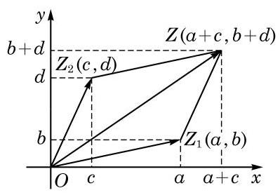
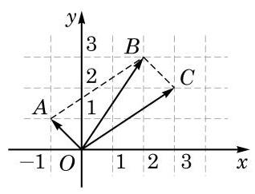
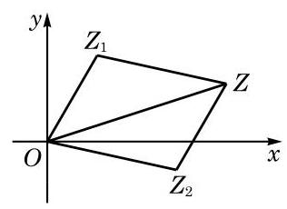

例题 1
例 1 在复平面上有点 、 ,分别写出这四个点所对应的复数 , 并求这些复数的共轭复数在复平面上所对应的点的坐标.
教师整合版 / 沪教版高中数学
必修第二册
第9章复数 · 保留教材主线与原题
教材与正式教参整合
复数 一一对应于有序实数对 ,而有序实数对 与平面直角坐标系中的点 又是一一对应的. 因此,可以用平面直角坐标系中的点 表示复数 .

图 9-2-1

图 9-2-2
如图 9-2-2,共轭复数 和 在复平面上所对应的点 和 关于 轴对称; 反之, 如果复平面上的两个点关于 轴对称,那么这两个点所对应的复数互为共轭. 特别地,如果 ,即 是实数,则 ,此时 在复平面上所对应的点是位于实轴上的同一点.
例 1 在复平面上有点 、 ,分别写出这四个点所对应的复数 , 并求这些复数的共轭复数在复平面上所对应的点的坐标.
上一章我们学过平面向量的坐标表示, 知道通过平面直角坐标系, 可在平面向量与平面上的点之间建立一一对应. 现在, 我们以平面直角坐标系为媒介, 又可以通过复数与平面上的点的一一对应, 在复数与平面向量之间建立一一对应. 如图 9-2-3, 复数 在复平面上对应坐标为 的点 ,而点 又对应于平面向量 ,从而复数 对应于平面向量 . 有了这些对应,我们可以把复数 方便地看作是复平面上的点 或向量 .

图 9-2-3
例 2 在复平面上作出表示下列复数的向量:

图 9-2-4
解 在复平面上,表示复数 , 的向量分别为图 9-2-4 中的向量
例 3 设复平面上的点 和点 所对应的复数分别为 和 ,试用 和 表示复平面上的向量 所对应的复数 .
解 复平面上的点 与点 的坐标分别为 与 ,故向量 ,它所对应的复数是 . 再由复数减法法则,可得 .
注意, 平面上起点不在原点的向量所表示的复数是该向量相应的位置向量所表示的复数. 上例说明, 这个复数是向量终点对应的复数与起点对应的复数之差.
例 4 设 ,复平面上的点 与 分别表示 与 . 求证: .
证明 令 ,则 ,从而 ,它们的数量积是 ,所以 .
我们已经知道向量的加法适用平行四边形法则, 在将复数与平面向量建立一一对应后, 两个复数的和是否与对应的向量的和一致呢? 也就是说, 在复平面上是否也可以用平行四边形法则表述复数的加法呢?

图 9-2-5
如图 9-2-5,复数 对应向量 , 复数 对应向量 . 由于复数 ,因此 对应于向量
这说明, 两个复数的和所对应的向量就是原来两个复数所对应向量的和,即以 与 为邻边的平行四边形的对角线所表示的向量. 这就是复数加法的平行四边形法则. 同样, 两个复数的差 所对应向量是两个向量 的差 .
例 5 如图 9-2-6,在复平面上给定平行四边形 , 其中点 与点 分别对应于复数 与 . 求点 所对应的复数.

图 9-2-6
解 由平行四边形 ,根据复数加法的平行四边形法则,点 所对应的复数为 .
(1) 是正实数； (2) 是负实数；
(3) 是实部小于零、虚部大于零的虚数；(4) 是虚部小于零的纯虚数.
例 6 求下列复数的模:
(1) ；
(2)
解 (1) .
(2) .
复数的模有如下性质:
其中, ,并在关于除法的性质中需假设 .
证明 设 ,则
为证关于乘法的性质,设有两个复数 与 ,则
现在,进一步设 ,则 ,于是 . 两边除以 ,就得到 .
例 7 已知复数 满足 ,求证: 是实数.
证明 由 ,得 ,所以 ,由此得到 ,从而可知 是实数.
例 8 求下列复数的模:
(1) ；
(2) .
解 (1)
(2)将原式分子分母都乘 ，就得到 ，其中 与 与 是两对共轭复数,它们都分别有相同的模,所以 .
第(2)小题虽可以像第(1)小题那样直接计算, 但这里的解法提供一个思路: 可以利用一些已知的性质简化计算过程.
复数的模还有如下性质: 对 ,
这不过是 “三角形两边之和大于第三边” 这个性质的另一种表达方式, 即必修课程第 2 章所述的 “三角不等式”. 如图 9-2-7, 若复平面上 是复数 所对应的点,则平行四边形 的顶点 就是复数 对应的点. 因此,有

图 9-2-7
复平面上两点的距离可以简洁地用对应复数差的模表示出来: 设 是复平面上的两个点,其对应的复数为 ,则由平面上两点间距离公式可知
例 9 设复数 和复数 在复平面上分别对应点 和点 ,求 两点间的距离.
解 两点间的距离是
(1) ； (2) ；
(3) .
(1)在复平面上分别作出这些复数所对应的点 ；
(2)在复平面上分别作出这些复数的共轭复数所对应的向量.
(1)实轴上; (2)虚轴上; (3)第四象限.
(1) ； (2)
5.5.
(1) ； (2) ；
(3) ; (4) .
(1)设复平面上表示 和 的点分别为点 和点 ，则表示向量 的复数在复平面上所对应的点位于 ( )
A. 第一象限; B. 第二象限; C. 第三象限; D. 第四象限.
(2)复平面上平行于虚轴的非零向量所对应的复数一定是 ( )
A. 正数; B. 负数;
C. 纯虚数; D. 实部不为零的虚数.